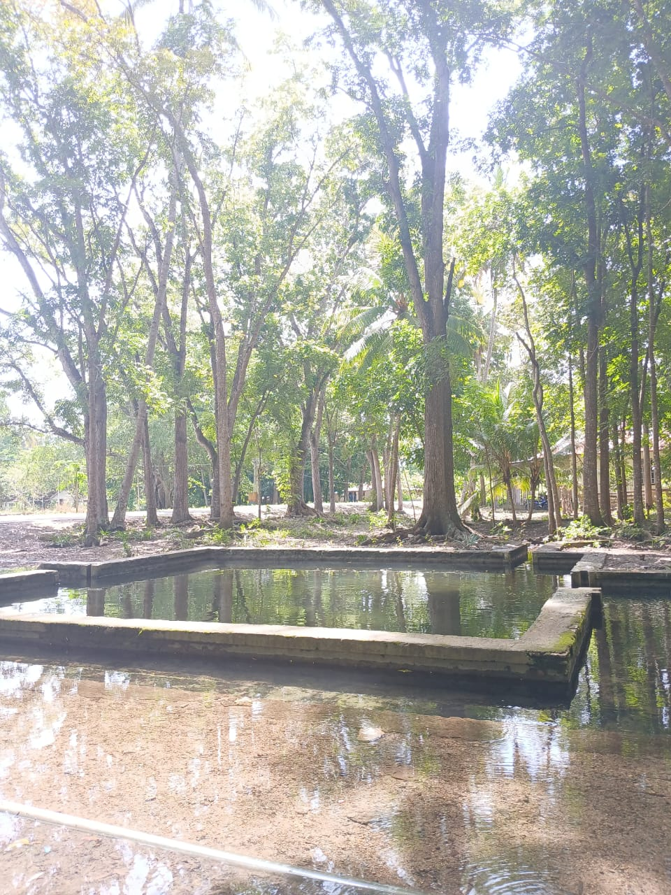
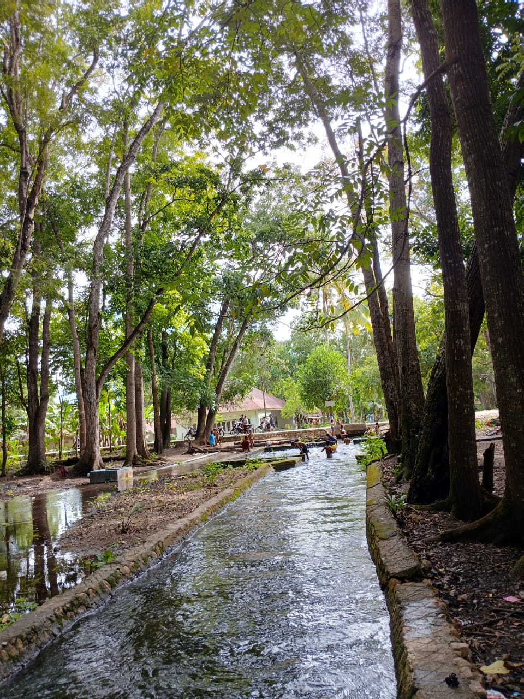
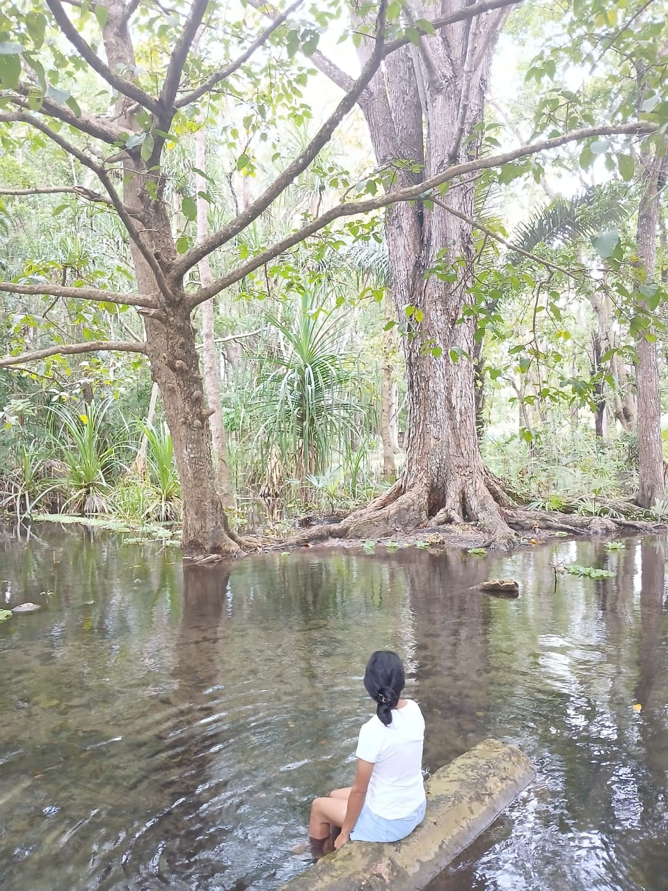

📍 Deskripsi Lokasi
Sumber Mata Air Oelolok terletak di Desa Oelolok, Kecamatan Mutis, Kabupaten TTU. Lokasi ini merupakan sumber utama air bersih bagi warga, sekaligus memiliki potensi wisata lingkungan karena keasriannya.
👥 Profil Pengunjung
- Didominasi warga lokal untuk mandi, mencuci, dan memasak.
- Digunakan oleh warga sekitar dan pengunjung desa untuk keperluan sehari-hari.
🎫 Tarif Masuk
Tiket Masuk: Gratis. Pengunjung dapat memberi sumbangan sukarela untuk kebersihan dan pemeliharaan area mata air.
🕓 Jam Operasional
Terbuka setiap hari, tanpa batasan jam. Waktu terbaik untuk berkunjung adalah pagi hingga siang. Tidak disarankan datang malam karena tidak ada pencahayaan.
🔍 Fungsi & Karakter
- Merupakan sumber utama air bersih untuk kebutuhan rumah tangga dan pertanian warga Oelolok.
- Lingkungan alami, berada di lereng pegunungan Mutis.
- Belum dikelola sebagai objek wisata komersial.
✅ Rekomendasi Pengunjung
- Bawa wadah air jika ingin mengambil air untuk keperluan pribadi.
- Hormati aktivitas warga yang menggunakan mata air untuk kebutuhan harian.
- Siapkan kantong sampah dan jaga kebersihan lingkungan.
- Hindari kunjungan malam hari.
Sumber: Dokumentasi Desa Oelolok • Wawancara Warga Setempat